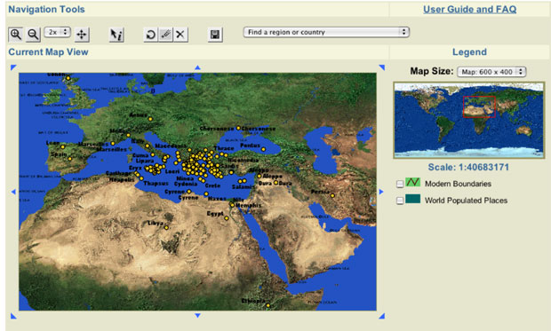
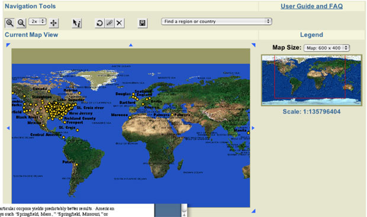
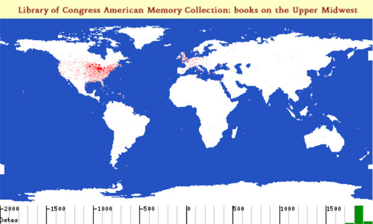
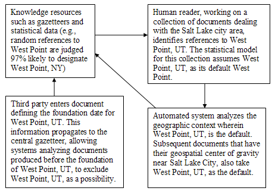

|
Search | Back Issues | Author Index | Title Index | Contents |

D-Lib Magazine
|
|
|
Gregory Crane |

|
This article compares how different cultural documents—even when converted into a common language—describe space in very different ways. While space has an objective component, cultural practices of describing space naturally differ. Ancient Greek and Latin texts, for example, do not draw upon complex geographic sources available to modern documents but their naming systems are much more well defined and these texts are much more tractable to machine processing than modern US sources. The scientific community has developed global methods to describe time and space alike. Within the sphere of direct human experience, we can describe time as a linear sequence of numbers and identify any point of human history as precisely as we choose. Space is trickier because our world exists in three dimensions. The paper-based media at our disposal have forced us to reduce our knowledge from three dimensions to two, but projections and coordinate systems exist by which we can locate any tree in the forest. Modern sensor arrays can collect standardized measurements according to predictable, almost arbitrarily exact levels of precision of quantity, time and location. Geographic Information Systems (GIS) represent society's struggle to make sense of the mounting and already stunning masses of information streaming in every second and from every segment of the earth and points beyond. All GIS systems confront the problem of converting complexity into forms that the human mind can grasp. Cultural heritage digital libraries differ, however, in that they explore human experience of space—something very different from objectified coordinate systems. Cultural heritage digital libraries thus face at least two extra sets of issues. First, while we may describe any point in time and space as precisely as we wish, perceptions of time and space alike vary from one culture to another. We who grew up surrounded by maps and calendars and exposed to archival history conceptualize the world in which we move very differently from hunter-gatherers who spend their lives moving through space without experience of any written records. The differences that separate and the commonalities that link our diverse habits of thought are fundamental objects of study. Conversely, standardizing measures of time and space not only enable modern nation states but destroy local systems of knowledge [1]. We thus find ourselves applying to vanished systems of thought those very instruments of measure which destroyed them. The more systematic, georeferenced data we have in our heads, the less we may be able to appreciate the meaning of a landscape to the hunter-gatherers who pursued their sustenance there or the agriculturalists who first broke the soil. Second, cultural memory preserves temporal-spatial data in a variety of languages, including, but not limited to, natural languages such as English, Chinese or Arabic. Consider, for example, the following text from a volume of the Official Records of the Civil War series covering "The Atlanta (Georgia) Campaign: May 1 - September 8, 1864."
Table 1. Table from United States. War Dept., et al., The War of the Rebellion [2], series 1, volume 38, part 1, p. 52 This text encodes into tabular format a list of principal events covered in this particular volume. The tabular form breaks the data up into records and fields. Each line encodes three basic categories of information: a date, an event and a location. Data of this type begs for inclusion within a GIS. We should be able to view events of May 1, 2, 3, etc. of 1864 played out on a map, identifying patterns of troop movement and general orientation as skirmishes shift (or remain stable) across space and time. The purely linguistic coding is not complex. We can convert the dates and placenames to absolute measures with which to generate maps and timelines. Prepositions are notoriously slippery linguistic elements, but in this context the geospatial implications of "at" and "near" are straightforward enough. If we have a skirmish "at Stone Church," we might represent the event with a well defined icon, whereas we might choose some other method to encode the space defined by "near Ringgold Gap." The small sample above shows that we need to be able to accommodate multiple geospatial descriptors ("Lee's Cross-roads, near Tunnel Hill"). Converting the table above to a database with fields for date, event and geographic location is easily done, but simply breaking up the rows into three fields is not enough. We need to associate strings such as "Stone Church" and "Catoosa Springs" with their physical locations. We can, of course, look up placenames in a gazetteer: the Getty Thesaurus of Geographic Names [3] lists only one "Catoosa Springs," but four locations called "Stone Church." The human reader can quickly infer that "Catoosa Springs" is probably the correct item, since Catoosa Springs is in Georgia and the book describes events in Georgia. Likewise, the human reader can see that the four records for Stone Church describe locations in Illinois, New York, Pennsylvania, and New Jersey. The gazetteer does not contain an entry for this Stone Church. Anyone working with nineteenth century documents would find this unsurprising: many events in the vast, still sparsely populated United States are located by reference to local, often transient landmarks. The Stone Church in question may well be long gone and, if not, would probably itself be identified by a street address. The human reader sets this aside till s/he can consult a period map and hopefully locate this particular landmark. How would a digital library extract the information in the table above? The tabular structure is simple; there are no tables within tables in this case. The language is modern English. The events take place in the United States. The table above even comes from a tiny elite class of online historical documents: its contents were carefully entered and tagged. XML markup captures the structure of the table, its rows and its cells. If we can set parameters for this table, the process is relatively easy. We describe the underlying data and instruct the location matcher only to accept gazetteer entries in or near Georgia. In a digital library, however, even modest human intervention may not scale. We at the Perseus Digital Library are working with a rather modest collection of nineteenth century U.S. materials with 50 million words. This collection contains more than 8,000 separate tables, with 150,000 rows and 260,000 cells. Categorizing, parsing, and extracting the information implicit in these well-tagged tables is a non-trivial task. In some cases, centralized reference works may contain information available in many different tables (e.g., Civil War casualty figures for a state vs. an individual regiment), but, even when the smaller tables do not add data to larger reference works, they are important evidence about the historical documents in which they appear. Originally designed in the mid 1980s as a digital library on the ancient Greek world, Perseus began to expand its focus to other collections within the humanities in the second half of the 1990s. We felt we needed to study the differences and similarities of problems in different areas of the humanities and thus to help develop broader models for cultural heritage digital libraries. A major grant from the Digital Library Initiative Phase 2 [4] allowed us to develop a range of new testbeds and to work with other third party materials (such as American Memory collections from the Library of Congress). We are beginning a final three year study phase in this overall project. Our primary goal now will be to help articulate the needs and opportunities for cultural heritage communities within the emerging cyberinfrastucture.[5-9] Perseus supports a production web site [10], in which various collections are visible. We are currently developing a new, much more decentralized architecture to replace the current system. Our biggest challenge with historical materials probably lies in extracting geospatial data from unstructured textual sources. Naming practices vary from culture to culture and general approaches yield different results for different cultural documents. North Americans regularly named their new cities after people (e.g., Washington), other places (e.g., Cambridge, MA), and things (e.g., Independence, MO, Christmas, FL). Where other cultures would add linguistic markers to identify a change of semantic class (e.g., instead of Washington, Washingtonia, Washingtonburg, Washingtonville etc.), Americans in particular would apply almost any name to any place. American cultural practices thus greatly complicate the task of semantic classification (e.g., does a given Washington designate a person or a place?). Furthermore, Americans used the same placenames over and over again: the Getty Thesaurus of Geographic Names lists 48 Lebanons in the United States and 58 Springfields. Thus even knowing the state does not always resolve ambiguities: the designation Lebanon, AL describes three distinct inhabited places. Cultural practices thus generate counterintuitive results. Although the geographic data available for the United States is far better than for any other country in history, the generalized algorithms that we apply to identify placenames in free text produce much better results for texts about ancient Greece and Rome (c. 95% accurate) than for American history (c. 80% accurate) [11, 12]. We can thus generate much more accurate geospatial data from automatic analysis of Thucydides' History of the Peloponnesian War than from Ulysses S. Grant's memoirs. 


Optimizing extraction for particular corpora yields predictably better results. American documents will combine keys such as "Springfield, Mass.," "Springfield, Missouri," or "Lebanon, Morgan County, Alabama." A few very common, superficially ambiguous terms may have simple default values. The Getty Thesaurus of Geographic Names lists 64 West Points in the United States. In a corpus dealing with the Civil War, however, we generate better results if we scan for designators (e.g., "West Point, Arkansas") but assume that unmarked West Points designate the U. S. Military Academy. Information extraction is a knowledge driven process. We can get good results by tagging training corpuses and generating statistical results from these, but the more information the better. A cyberinfrastructure for historical study should include a framework to integrate knowledge about the past from many different sources and then make this information available in a way that can enhance the performance of placename extraction services. Census data already drives modern GIS systems, and the challenge of working with earlier census information is well known. Historical studies require a range of other sources such as city directories, earlier gazetteers, newspaper advertisements, encyclopedias, book indices, etc. These provide both direct data (e.g., John Smith, laborer lived at address X in city Y in year Z) and sources for analysis (e.g., as part of the disambiguation process, compare the language in encyclopedia articles about various Springfields with the language adjacent to a particular reference to a Springfield in a given text). Consider one example that illustrates the sort of source that does not fall into one of the above categories. George Presbury Rowell's newspaper directories in the nineteenth century not only include data about individual newspapers but information about the home towns. Thus, we learn not only that Prattsville, Autauga County, Alabama, has a population of 5,000 but that this town is located about 14 miles NW of Montgomery, while Clayton, a town of 800 in Barbour County, is 75 miles NE of Montgomery. Information extraction routines can use the relative locations to match nineteenth century names against a modern gazetteer, but these relative locations allow us to reconstruct networks of hierarchical relationships between inhabited places. Even if we can find these relationships in other sources, the Rowell directories are important insofar as their information shaped decisions. Every time a document such as Rowell's Directory is placed online, its geospatial information should be harvested and disseminated to a range of services. Such dynamic processes are not yet in place but must be an essential feature in any long-term cyberinfrastructure.  ConclusionFor humanists, the only conversations that really matter are those between people, and ideas arguably matter only insofar as they find their ways, sooner or later, into the wetware between our ears. Nevertheless, the thoughts that we have in our own minds depend increasingly upon the conversations between linked systems. Digital libraries are environments that support such conversations: already in the Perseus Digital Library, the reading environment asks the placename extractor to locate placenames in a given text, the placename extractor asks its authority lists about which terms might describe places and then consults other sources to determine which Springfield, for example, is meant in a given place. For historians, a cyberinfrastructure that would open this conversation up, facilitating interaction between services and data sources, would provide far better results and more sophisticated services. References1. Scott, J.C., Seeing like a state : how certain schemes to improve the human condition have failed. In Yale Agrarian Studies. 1998. New Haven: Yale University Press. 2. United States. War Dept., et al., The War of the Rebellion: a compilation of the official records of the Union and Confederate armies. 1880. Washington: Govt. Print. Off. 70 v. in 128. 3. J. Paul Getty Trust and Getty Vocabulary Program, Getty Thesaurus of Geographic Names On Line. 2000. Los Angeles, CA: J Paul Getty Trust. Available at <http://www.getty.edu/research/conducting_research/vocabularies/tgn/>. 4. Crane, G., et al., A Digital Library for the Humanities: A Proposal Submitted to the NEH-NSF Digital Libraries Initiative, Phase II. 1998. Available at <http://www.dli2.nsf.gov>. 5. Crane, G., Cultural Heritage Digital Libraries: Needs and Components. In European Conference on Digital Libraries (ECDL). 2002. Rome: Springer. 6. Crane, G., The Perseus Project and the Problems of Digital Humanities. In Standards und Methoden der Volltextdigitalisierung. 2001. Trier, Germany: Mainz Academy. 7. Crane, G., et al., Drudgery and Deep Thought: Designing Digital Libraries for the Humanities. In Communications of the ACM 44(5) (2001). 8. Crane, G., D.A. Smith, and C. Wulfman, Building a Hypertextual Digital Library in the Humanities: A Case Study on London. In JCDL 2001: The First ACM+IEEE Joint Conference on Digital Libraries. 2001. New York: ACM Press. 9. Crane, G., Towards a Cultural Heritage Digital Library. In JCDL 2003: The Third ACM/IEEE-CS Joint Conference on Digital Libraries. 2003. Washington, D.C.: IEEE Computer Society. 10. Crane, G., The Perseus Project: An Evolving Digital Library. 2004. Tufts University. Available at <http://www.perseus.tufts.edu>. 11. Smith, D.A., Detecting and browsing events in unstructured text. In Proceedings of the 25th Annual ACM SIGIR Conference. 2002. Tampere, Finland: ACM. 12. Smith, D.A. and G.R. Crane, Disambiguating Geographic Names in a Historical Digital Library. 2001. Perseus Project/Tufts University: Medford, MA. 13. Chapman, S., Hand Book of Wisconsin, second edition. 1856. Milwaukee. Copyright © 2004 Gregory Crane |
|||||||||||||
| |
|||||||||||||
|
Top | Contents | |||||||||||||
| | |||||||||||||
|
D-Lib Magazine Access Terms and Conditions DOI: 10.1045/may2004-crane
|